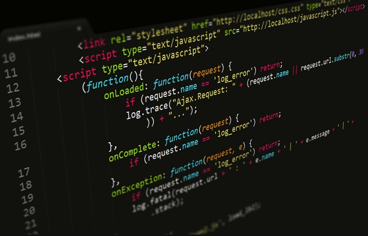

Why JavaScript
There are two reasons why it’s sometimes hard to make a choice; either there are too few options to choose from, or there are too many. When it comes to programming languages, there is an embarrassment of riches, which in turn can cause mental gridlock. There’s Python, Java, JavaScript, C/CPP, PHP, Swift, C#, Ruby, Objective-C, and SQL, and that’s not even the full list! How do you choose?
Now, bear in mind that as far as programmers go, there’s no such thing as knowing too many languages. A programmer with a grasp of many languages is a programmer who is highly marketable and very much in demand. Upskilling is always a smart way to go.
Still, you have to start somewhere; and that should be with one of the more popular languages, one that’s experiencing unprecedented growth in demand.
We present to you, JavaScript!
What Exactly is JavaScript?
Not to be confused with Java, JavaScript—created by Netscape Communications—first appeared in 1995. Its developers define it as a “scripting or programming language that allows you to implement complex things on web pages.” JavaScript makes web pages more dynamic and user-friendly so that they respond to visitors’ actions. Or, to put it another way, JavaScript makes web pages interactive.
JavaScript was once called LiveScript; but due to Java’s popularity, it was rebranded to take advantage of that fame. You could say that the newer language hitched its wagon to the rising star and went along for the ride, attracting its vast following in the process.
So with this in mind, let’s explore 10 compelling reasons to learn JavaScript.
-
It’s the most popular programming language
We start our list with possibly the most significant reason! According to Stackoverflow.com, JavaScript is the most popular programming language used by professional developers today. Even back-end developers choose JavaScript more often than not. -
It’s in your browser JavaScript is, without question, the default language of the internet. You need to look no further than your browser for proof since JavaScript was most likely used to develop it. Since browsers are a necessary part of any user’s online experience, it’s easy to see why JavaScript is so significant.
-
JavaScript also exists outside of the internet JavaScript has many uses that go beyond its traditional internet roles. It powers smart televisions, works with the internet of things (IoT), creates native apps for iOS and Android, and builds cross-platform desktop apps, to name a few.
-
JavaScript is Ideal for Newbies Since it’s already installed on every web browser today, JavaScript spares the rookies from the chore of setting up a development environment. Newcomers can just jump in and start coding. It’s one of the most accessible entries into coding available, a value-add for beginners. There is also a large online community that offers support and advice.
Also, JavaScript is an excellent tool for beginning programmers who want to expand their skill set into other languages. JavaScript supports valuable skills such as object-oriented, functional, and imperative styles of programming. Beginner developers, in turn, can apply these skills to any new language they want to learn, like Python, Java, or C++. -
JavaScript is Easy to Learn Not only is it a natural language to use, but JavaScript is also easy to pick up. JavaScript turns intricate details into abstracts, making things easier for the newcomer. Unlike the higher-level languages, JavaScript has more of a natural language feel to it.
-
You Can Create Visual Effects and Other Eye-catching Aesthetic Features There’s building a web page, and then there’s building a visually appealing web page that attracts the user’s attention and encourages interaction. JavaScript is so versatile that you can use it to easily add cool design elements such as animation, interactive maps, and scrolling video. Organizations and clients want web designers who can not only put together a technically sound page but one that also will lure visitors. If you know JavaScript, you can deliver.
-
JavaScript is Versatile Far from being a one-trick pony, JavaScript empowers a programmer to handle any aspect of app design. Do you want to do user-side (front-end) coding? You can do it in conjunction with Angular. Are you more interested in the server-side (back-end)? Bring Node.js into the mix and you can do that, too!
You can also create desktop, mobile, and web apps with Electron, React Native, and React. If you’re intrigued by machine learning, then JavaScript will help you there as well. -
JavaScript also Affects Big Data and the Cloud JavaScript Object Notation (JSON) is the go-to standard for data exchanges on today’s internet. NoSQL databases use JSON documents for record storage; and although JSON plays well with any programming language, it does best with JavaScript.
Also, more developers are turning to Node.js to build cloud-based apps, a very much in-demand market. -
It’s a Valuable Tool for Game Designers Games are a big business today, and developers who know JavaScript have that extra advantage. The language’s versatility, power, and ability to easily create visual effects make it a perfect fit for game developers.
-
Finally, the Career Potential is Skyrocketing With an increasing number of businesses and organizations going digital, there is a corresponding increase in demand for developers who are familiar with the better-known programming languages. As we’ve already noted, that’s JavaScript!

As it happens, there’s also a shortage of good JavaScript developers, so you have increased demand in conjunction with a deficit of qualified people. According to a report released by Devskiller.com, 70 percent of companies surveyed want to hire a JavaScript developer. Also, there’s a growing demand for data scientists who have expertise in Python. The market for data scientists and data analytics is projected to grow by 15 percent between 2015 and 2020. In actual numbers, that means 364,000 new job openings. Considering how every Python web app uses JavaScript in their front end, it becomes clear that the language is a necessity.
Businesses and other organizations that are looking for JavaScript professionals are willing to pay well, too! Indeed.com shows that a JavaScript developer can potentially earn an annual average of $113,643 in the United States.
If you’re looking to become a programmer who can always be assured of a stable career and get well compensated for it, then you want to learn JavaScript.